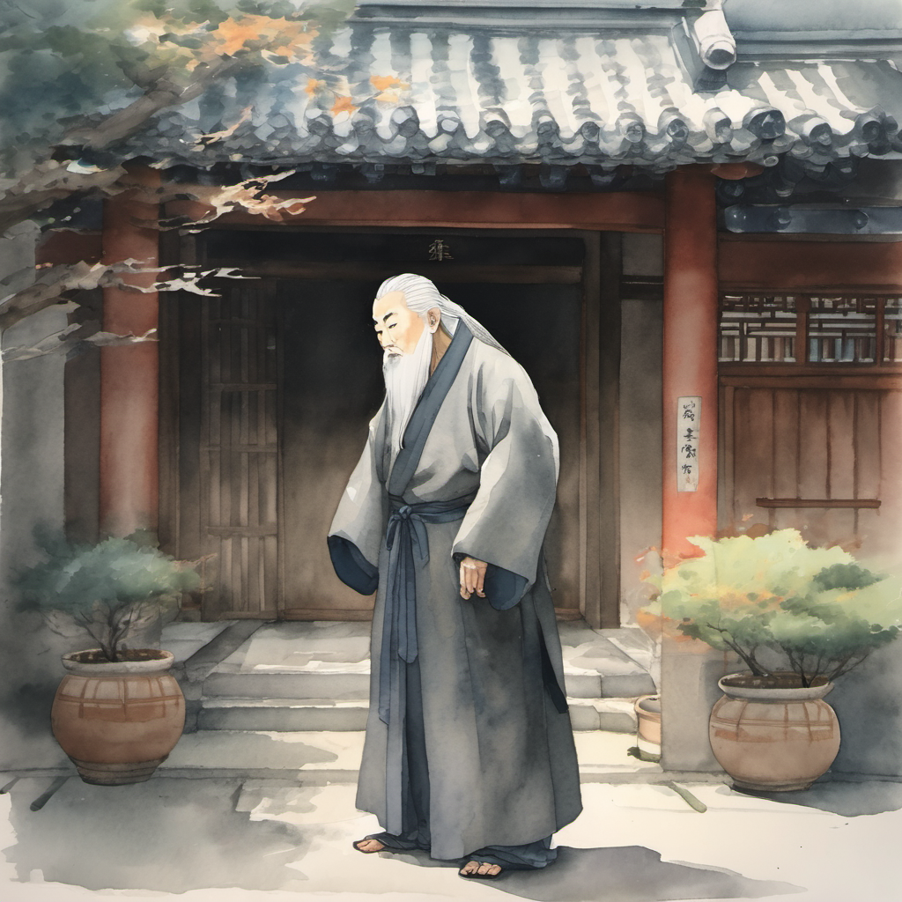
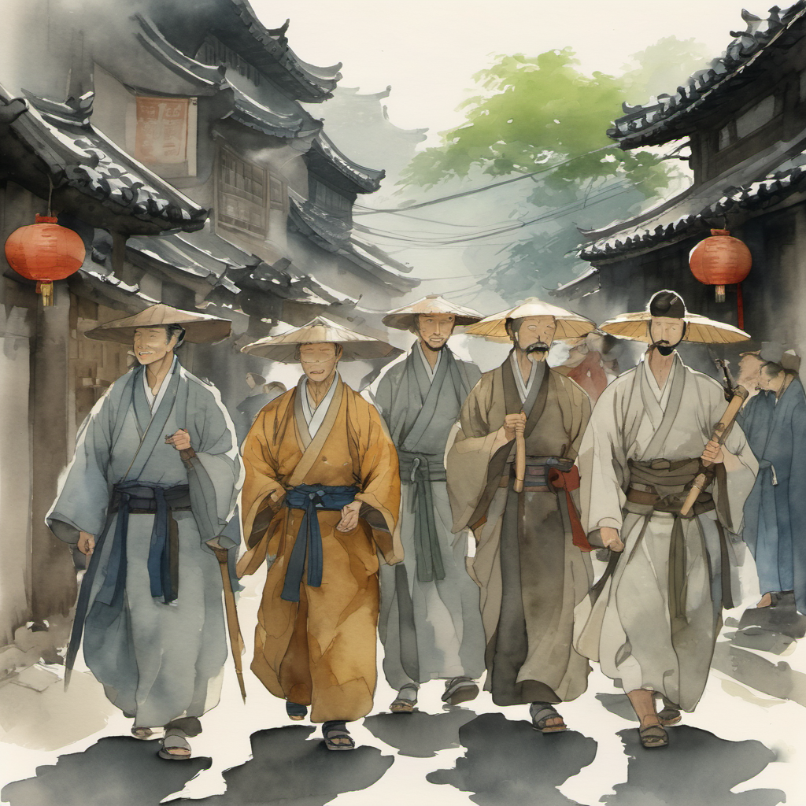
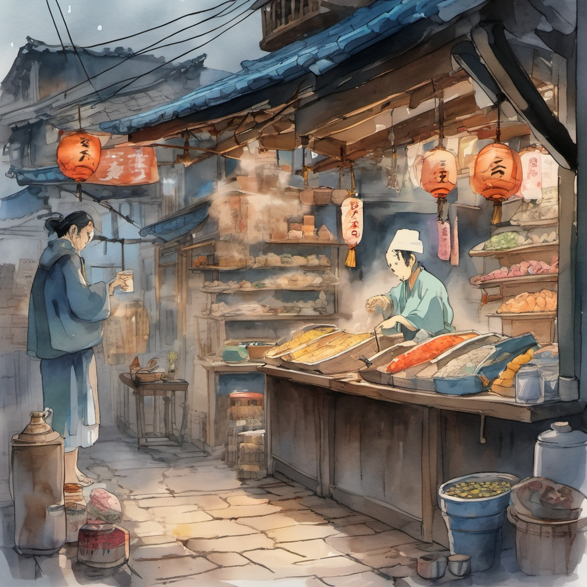
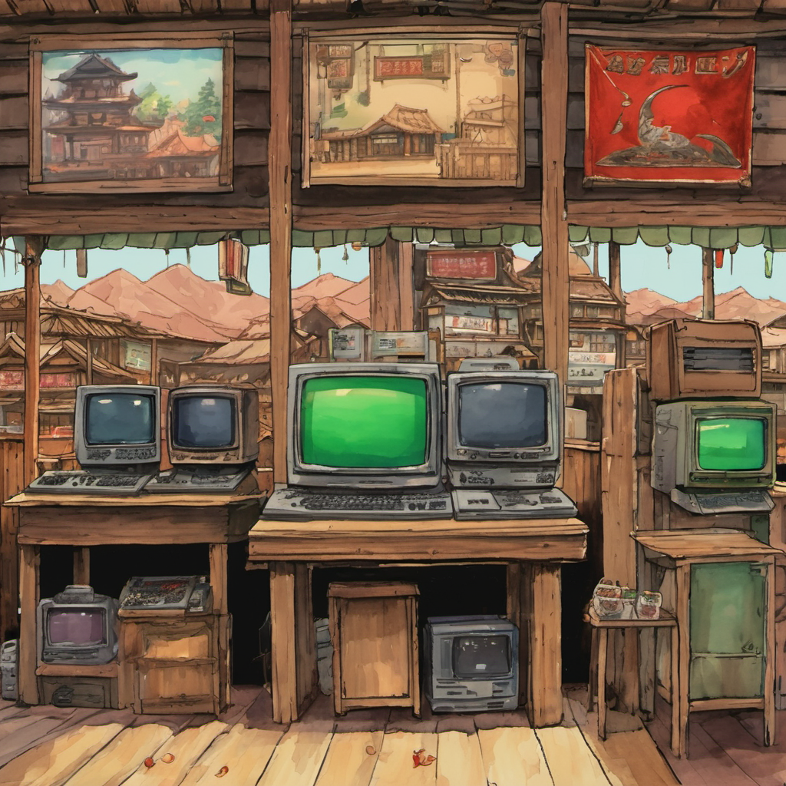
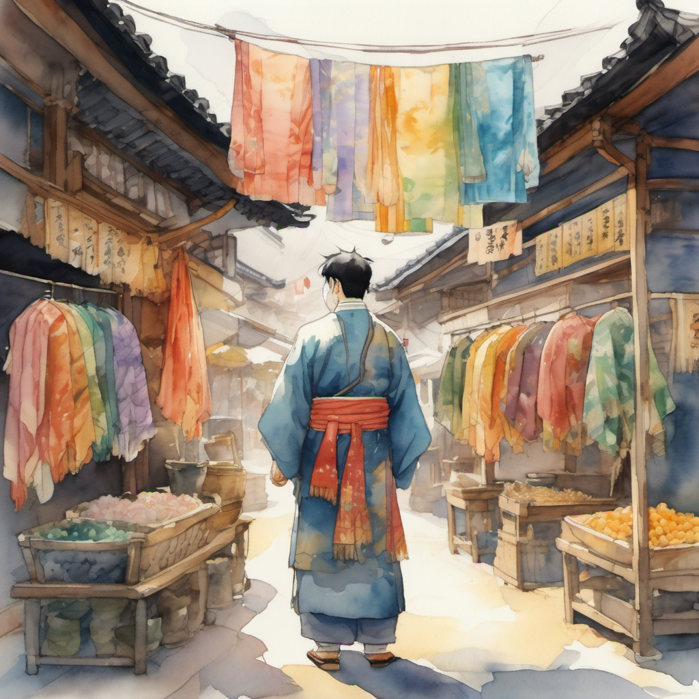
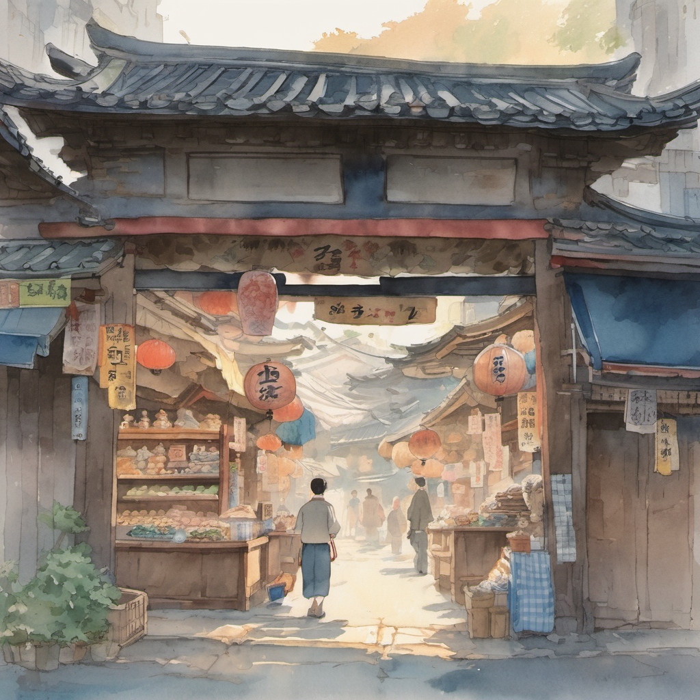
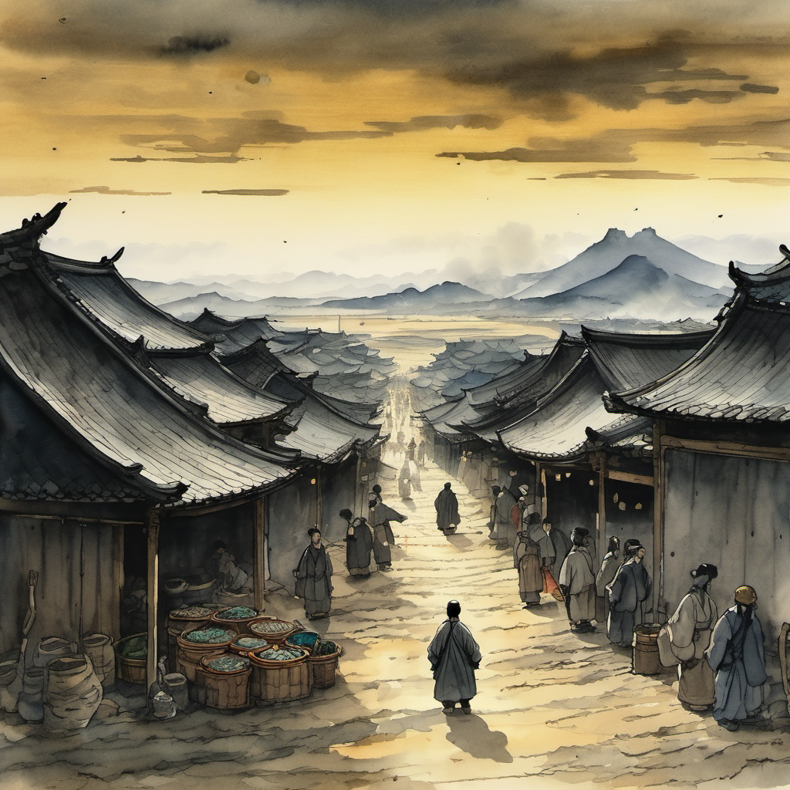

무명 사부 직접 등장 — 빈손

객점 안채의 문이 한 번 열렸다. 무당파 본 본 사부 — 무명이 — 한 번 마당에 나왔다. 도복은 — 짙은 — 회색. 머리는 — 백발. 손에는 — 검도 — 비급도 — 들고 있지 않았다. 빈손. 무당파 본 본 사부의 — 빈손 — 그것이 — 그의 — 무공의 — 본 본 맥.
후퇴 선언 — 49화 곤륜산 정상
배웅인가 추격인가

정주가 일행 다섯 명을 한 번 둘러봤다. 무휼은 H빔을 어깨에 걸치고. 슬레이어는 작두를 양손에 잡고. 홍대걸은 단군왕검의 건을 매만지고. 이방원은 부러진 목검을 허리춤에 꽂고.
큰길이 — 곧 — 개성 시장으로 — 이어졌다.
2중 충돌 글리치 ⭐

정주 일행이 시장 입구에 들어선 순간 — 시야가 한 번 흔들렸다. 시장의 풍경 자체가 한 번에 두 겹으로 보였다.
한 겹 — 고려 말 1392년의 개성 시장. 좌판에 널린 비단 / 도자기 / 한지 / 담배 / 절인 청어 / 누룩.
또 한 겹 — 1990년대 부산 광복동의 어느 PC방. 모니터 / 키보드 / CRT / 흡연 부스 / 짜장면 그릇 / 컵라면 김.
PC방 게임 텍스처 — 1990년대 향수 ⭐

PC방의 텍스처가 한 번 더 깊어졌다. 모니터의 화면이 한 번 켜졌다. 1990년대 「스타크래프트」의 로딩 화면이 한 번 깜빡였다. 옆 모니터에서는 「디아블로 1」의 트리스트럼 마을 BGM이 한 번 흘러나왔다. 그 옆은 「리니지」의 인첸트 실패 시스템 메시지. 그 옆은 「바람의 나라」의 부여 마을.
비단 진열대 5cm 어긋남

좌판 끝에서 한 무더기의 비단 진열대가 한 번 보였다. 비단이 다섯 단으로 정렬되어 있었다. 그러나 그 다섯 단의 한 단이 한 번 5cm 정도 어긋나 있었다.
시장 주인이 한 번 — 비단 진열대의 한 단을 — 5cm 정도 — 다시 — 정렬했다. 정렬된 순간 — 비단 진열대 옆에 — 깜빡이던 — PC방 모니터가 — 한 번 — 사라졌다.
글리치 풀림 — 60fps 회복

비단 진열대의 정렬 후 — 시장 전체의 글리치가 — 한 번에 — 풀리기 시작했다. PC방 모니터들이 — 한 번에 — 사라졌다. 키보드들이 — 한 번에 — 사라졌다. 컵라면 냄새가 — 한 번에 — 사라졌다.
시장이 — 다시 — 한 겹으로 — 돌아왔다. 고려 말 1392년의 개성 시장. 60fps의 정상 속도로 — 한 번 — 돌아왔다.
무명 사부의 그림자가 — 한 번 — 일행의 등 뒤에서 — 멀어졌다. 청천을 비롯한 5명의 청년 검수가 — 한 번 — 시장 입구에서 — 멈췄다. 무당파의 배웅 — 인지 — 추격 — 인지 — 의 행렬이 — 한 번 — 시장 입구에서 — 한 번 — 끝났다.
평원 거지 떼의 그림자 — 13화 예고

도비 신수는 — 인천 옥탑방에서 — 한 번 — 더 — 잠을 — 자고 있었다. 본 권 36화 — 곤륜산 중턱의 — 1990년대 PC방 + 고려 말 + 곤륜산 풍경 — 의 — 3중 충돌 글리치부터 — 도비 신수의 — 한쪽 발바닥이 — 한 번 — 키보드의 — 한 키 — 위에 — 가볍게 — 얹힐 것이었다. 본 권 49화의 sudo를 위한 — 사전 — 호흡.
시장 끝에서 — 평원이 — 한 번 — 보였다. 평원 끝에서 — 누더기를 걸친 — 거지 떼의 — 그림자가 — 한 번 — 새까맣게 — 깔려 있었다.
(2권 12화 끝)